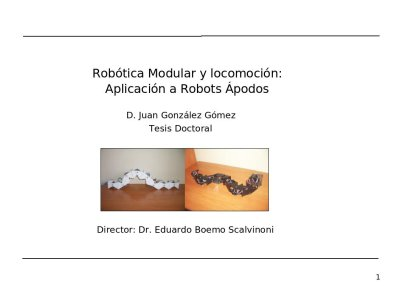

El pasado miércoles 8 de octubre realicé el
seminario previo a la defensa de la tesis.
Es una exposición obligatoria, dirigida al departamento de la escuela.
La charla fue en castellano, pero la defensa final tendrá que ser en Inglés para la obtención
de la mención europea.
El 14 de octubre hice la entrega definitiva de la tesis (
PDF), en el registro de la Universidad Autónoma. Ya me va quedando menos para terminar.
La batalla final se librará en el futuro, el viernes 21 de Noviembre de 2008, a las 12h,
en la sala de grados del módulo 16 de la facultad de Ciencias de la UAM 😉
Bueno, sólo desearte suerte con la lectura de tesis, aunque seguro que no la necesitas. Que gran momento despues de tanto esfuerzo, ¿no?
Disfruta.
Abrazos amigo.
Hola Isaac,
Muchísimas gracias 🙂 Estoy como loco por leerla y terminar ya